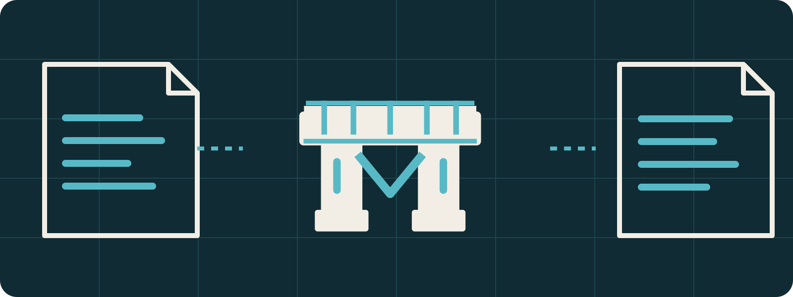

Maven plugin
Performs Bridge transformations after Java compilation.
A post-compile Maven plugin and supporting bytecode library for transformations that use existing Java semantics.

io.github.supracraft.bridge0.1.0-devPerforms Bridge transformations after Java compilation.
Provides runtime/API and ASM helper modules used by transformed consumers.
CI builds once, validates the produced bytes, and promotes those tested artifacts.
Bridge uses one artifact set per Bridge version. The compatibility policy defines blocking, release-qualification, and early-access JVM lanes; only completed CI/release evidence establishes tested support.
Machine-readable compatibility policy · 0.1.0 qualification plan
Pin one exact Bridge version across the API/helper/plugin modules. GitHub Packages is the canonical Maven repository for current immutable publications and requires authentication.
Artifact consumption guide · Version semantics · Diagnostics
Generated Pages endpoints mirror canonical repository contracts. Prefer these or the source files over scraping presentation HTML.
project.jsoncompatibility.jsongithub.jsonartifacts.jsonbrand.jsonllms.txt